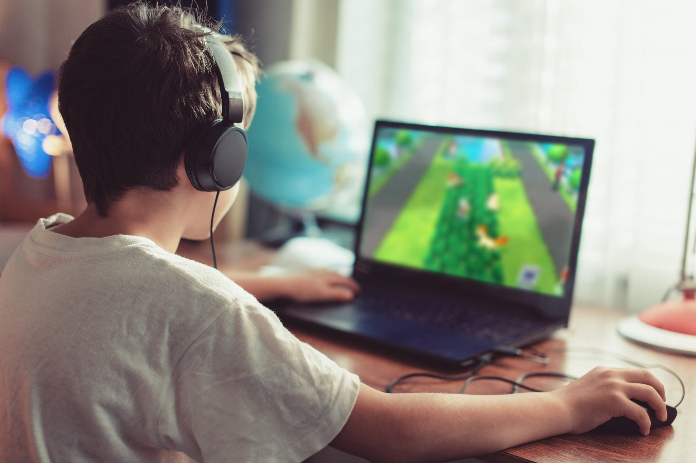

Nome: Pedro Sporgat
Idade: 12 - 15 anos
Ocupação: Estudante
Gênero: Masculino
Dispositivo: PC
Objetivo ao jogar: Se distrair rapidamente e obter recompensas imediatas
Frustrações: Jogos demorados, dificuldade alta e falta de recompensa rápida
Estilo de vida: Gosta de memes e humor rápido, consome conteúdo curto e joga para relaxar, não para competir.
Preferências: Jogos simples, rápidos e com progressão clara
Comportamento: Costuma jogar por períodos curtos durante o dia
Motivação: Sentir progresso rápido e se divertir sem esforço